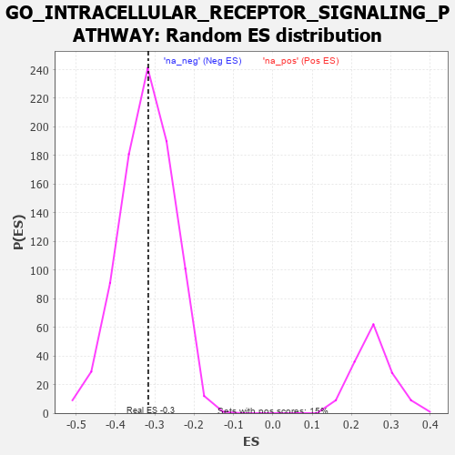

| | | Dataset | 7d |
| Phenotype | NoPhenotypeAvailable |
| Upregulated in class | na_neg |
| GeneSet | GO_INTRACELLULAR_RECEPTOR_SIGNALING_PATHWAY |
| Enrichment Score (ES) | -0.3164413 |
| Normalized Enrichment Score (NES) | -0.98550177 |
| Nominal p-value | 0.5064328 |
| FDR q-value | 0.8926532 |
| FWER p-Value | 1.0 |
Table: GSEA Results Summary
 Fig 1: Enrichment plot: GO_INTRACELLULAR_RECEPTOR_SIGNALING_PATHWAY
Fig 1: Enrichment plot: GO_INTRACELLULAR_RECEPTOR_SIGNALING_PATHWAY
Profile of the Running ES Score & Positions of GeneSet Members on the Rank Ordered List
| PROBE | GENE SYMBOL | GENE_TITLE | RANK IN GENE LIST | RANK METRIC SCORE | RUNNING ES | CORE ENRICHMENT | | 1 | AXIN1 | | | 166 | 1.159 | 0.0093 | No |
| 2 | RORB | | | 189 | 1.097 | 0.0351 | No |
| 3 | UFSP2 | | | 230 | 0.981 | 0.0557 | No |
| 4 | ARNT | | | 357 | 0.741 | 0.0591 | No |
| 5 | CNOT2 | | | 514 | 0.625 | 0.0557 | No |
| 6 | RWDD1 | | | 526 | 0.621 | 0.0705 | No |
| 7 | NR1I3 | | | 539 | 0.615 | 0.0850 | No |
| 8 | UBA5 | | | 982 | 0.488 | 0.0418 | No |
| 9 | YAP1 | | | 1041 | 0.475 | 0.0469 | No |
| 10 | SRC | | | 1128 | 0.459 | 0.0480 | No |
| 11 | KCTD6 | | | 1213 | 0.444 | 0.0489 | No |
| 12 | FKBP4 | | | 1390 | 0.412 | 0.0374 | No |
| 13 | CARM1 | | | 1413 | 0.408 | 0.0453 | No |
| 14 | TADA3 | | | 1580 | 0.378 | 0.0341 | No |
| 15 | RNF6 | | | 1605 | 0.373 | 0.0408 | No |
| 16 | RXRA | | | 1647 | 0.365 | 0.0451 | No |
| 17 | KDM5D | | | 1716 | 0.353 | 0.0458 | No |
| 18 | KDM3A | | | 2078 | 0.294 | 0.0077 | No |
| 19 | TAF7 | | | 2092 | 0.292 | 0.0137 | No |
| 20 | C1QBP | | | 2189 | 0.278 | 0.0088 | No |
| 21 | PIAS2 | | | 2581 | 0.215 | -0.0351 | No |
| 22 | PUM2 | | | 2627 | 0.209 | -0.0354 | No |
| 23 | CLPB | | | 2706 | 0.198 | -0.0401 | No |
| 24 | PHB2 | | | 2712 | 0.197 | -0.0356 | No |
| 25 | RORA | | | 2730 | 0.193 | -0.0327 | No |
| 26 | UFL1 | | | 3041 | 0.144 | -0.0682 | No |
| 27 | HDAC1 | | | 3086 | 0.138 | -0.0701 | No |
| 28 | AHR | | | 3175 | 0.126 | -0.0780 | No |
| 29 | TRIP4 | | | 3290 | 0.107 | -0.0896 | No |
| 30 | TAB1 | | | 3351 | 0.097 | -0.0947 | No |
| 31 | MED1 | | | 3405 | 0.089 | -0.0991 | No |
| 32 | RXRG | | | 3435 | 0.085 | -0.1005 | No |
| 33 | CNOT1 | | | 3473 | 0.081 | -0.1031 | No |
| 34 | UFM1 | | | 3506 | 0.077 | -0.1052 | No |
| 35 | UBR5 | | | 3518 | 0.074 | -0.1046 | No |
| 36 | DAXX | | | 3722 | 0.038 | -0.1293 | No |
| 37 | IFIH1 | | | 3919 | 0.006 | -0.1540 | No |
| 38 | NCOR1 | | | 3961 | 0.000 | -0.1592 | No |
| 39 | DDX58 | | | 3998 | -0.007 | -0.1635 | No |
| 40 | RNF14 | | | 4013 | -0.010 | -0.1651 | No |
| 41 | PARP1 | | | 4014 | -0.010 | -0.1648 | No |
| 42 | DDX17 | | | 4161 | -0.035 | -0.1824 | No |
| 43 | SNW1 | | | 4514 | -0.096 | -0.2244 | No |
| 44 | PIM1 | | | 4776 | -0.152 | -0.2535 | No |
| 45 | WBP2 | | | 4780 | -0.153 | -0.2499 | No |
| 46 | EP300 | | | 4941 | -0.186 | -0.2653 | No |
| 47 | DDX54 | | | 5093 | -0.222 | -0.2786 | No |
| 48 | TBX1 | | | 5166 | -0.241 | -0.2815 | No |
| 49 | HDAC6 | | | 5183 | -0.244 | -0.2771 | No |
| 50 | TMF1 | | | 5225 | -0.251 | -0.2758 | No |
| 51 | TCF21 | | | 5340 | -0.283 | -0.2828 | No |
| 52 | LMO3 | | | 5342 | -0.283 | -0.2756 | No |
| 53 | LATS1 | | | 5412 | -0.298 | -0.2765 | No |
| 54 | VDR | | | 5517 | -0.325 | -0.2812 | No |
| 55 | CASP8 | | | 5678 | -0.369 | -0.2918 | No |
| 56 | STRN3 | | | 5849 | -0.417 | -0.3024 | No |
| 57 | TKFC | | | 5854 | -0.419 | -0.2920 | No |
| 58 | NR2E3 | | | 6048 | -0.488 | -0.3037 | Yes |
| 59 | CALR | | | 6077 | -0.499 | -0.2942 | Yes |
| 60 | UBB | | | 6090 | -0.503 | -0.2826 | Yes |
| 61 | THRB | | | 6178 | -0.531 | -0.2798 | Yes |
| 62 | KLF2 | | | 6182 | -0.532 | -0.2663 | Yes |
| 63 | BIRC3 | | | 6366 | -0.603 | -0.2737 | Yes |
| 64 | UBE2N | | | 6407 | -0.621 | -0.2626 | Yes |
| 65 | PLIN5 | | | 6524 | -0.672 | -0.2597 | Yes |
| 66 | PAK1 | | | 6691 | -0.757 | -0.2610 | Yes |
| 67 | NR4A1 | | | 7022 | -0.951 | -0.2779 | Yes |
| 68 | RNF34 | | | 7040 | -0.963 | -0.2549 | Yes |
| 69 | DDX5 | | | 7152 | -1.037 | -0.2419 | Yes |
| 70 | UFD1 | | | 7157 | -1.040 | -0.2152 | Yes |
| 71 | AR | | | 7169 | -1.046 | -0.1893 | Yes |
| 72 | PLPP1 | | | 7262 | -1.135 | -0.1713 | Yes |
| 73 | CYLD | | | 7333 | -1.206 | -0.1486 | Yes |
| 74 | UBC | | | 7410 | -1.274 | -0.1250 | Yes |
| 75 | PTF1A | | | 7646 | -1.637 | -0.1120 | Yes |
| 76 | TRAF6 | | | 7818 | -2.157 | -0.0773 | Yes |
| 77 | XIAP | | | 7947 | -3.696 | 0.0030 | Yes |
Table: GSEA details [plain text format]

Fig 2: GO_INTRACELLULAR_RECEPTOR_SIGNALING_PATHWAY: Random ES distribution
Gene set null distribution of ES for GO_INTRACELLULAR_RECEPTOR_SIGNALING_PATHWAY